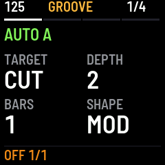
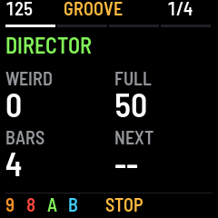

Live6 performer interface
Live6 starts on LIVE: one performance surface with latched sections. Select a section, release its button, then use the knobs and musical keys. No pagination. All LIVE display text is at least 20 px: labels/status 20, heading 24, values 36. The detailed legacy editor keeps its original layout and fonts.

Start playing
- On 303 A, press OCT+ for a phrase, then PLAY.
- Tap ARP to select Director. Tap ARP again to coordinate B and the drum kit.
- First four black keys select 909, 808, 303 A and 303 B. Hold SEL to link parts.
- Tap EDIT for the selected instrument, LFO for Mixer, FX for momentary effects, ENV for Automation, or ARP for Director. These selections latch.
Key numbers below count white or black keys separately, from the left.
Instrument
The four 303 knobs control cutoff, resonance, envelope modulation and decay. Tap EDIT again for accent, waveform, drive and drive type; again returns to the native controls. Independent patches and levels remain independent.
The first six white keys on a 303 apply small relative sound macros: Dry, Squelch, Bite, Dub, Thin and Wide. Changes are bounded by each control's range. They can operate on both selected 303s. Manual note playing remains in SEQ.
On drums, white keys select instruments; knobs control tuning, character, decay and drive where supported. EDIT selects instrument level/pan/reverb/delay. EDIT + PRESETS changes drum distortion type. PRESETS normally selects a drum instrument or the focused 303 waveform.
Mixer
Tap LFO once. Knobs 1–4 are the levels of 909, 808, 303 A and 303 B. Black keys 1–4 directly toggle those parts. White keys 1–11 toggle individual instruments in the focused kit. PRESETS switches the mixer kit between 909/808.
Hold REC and press a black or white key for part/instrument solo. Repeat to clear; tap REC while soloing also restores the prior mix. HOME + SEL restores the mix captured before the first manual mute gesture. Manual mutes retain priority over Director participation choices.
Hold SEL in Mixer for the selected instrument's level, pan, reverb and delay sends. Select a drum instrument in Instrument first when editing its sends. HOME + key mute gestures also remain available outside Mixer.

Automation
Tap ENV once. Knobs select target control, depth, cycle length and shape. Cycle lengths: 1, 2, 4 or 8 bars. The target is one of the selected instrument's four native sound controls. Drum parameters without a numeric control are ignored.
| White keys | Presets |
|---|---|
| 1–3 | Modulate: shallow / medium / deep |
| 4–6 | Growing saw: shallow / medium / deep |
| 7–9 | Falling saw: shallow / medium / deep |
| 10–16 | Stop all preset automation and return to manual values |
Presets capture the control's current value. Depths are roughly 1/8, 1/4 or 3/8 of its parameter range. Values stay within the original parameter limits. The modulation triangle moves around the captured value; growing/falling saws move above/below it and repeat. The manual project setting is retained.
Automation joins the current musical phase: engage a four-bar grow in bar 3, and it joins midway through that cycle, resetting at the end of bar 4. It does not begin a new four-bar countdown. A new section establishes a new origin. Extending a section preserves its current position and postpones the next one.
Up to eight parameter gestures can run at once. Turning an automated sound knob takes over from its current audible value and cancels that gesture. Stopping transport returns gestures to manual settings. Preset automation is session-only. The shared bar reference is the 909's normal 16-step, sixteenth-note pattern; keep that reference and legacy song/chaining off for this performance workflow.

Director and section length
Tap ARP for Director. Knobs 1/2 are drum Weird/Full; knob 3 changes the current segment length; knob 4 queues the next section. Musical keys provide direct access:
| White key | Action |
|---|---|
| 1–7 | Queue INTRO, GROOVE, BUILD, BREAK, BRIDGE, DROP, OUTRO |
| 8 / 9 | Shrink / extend the current segment by one bar |
| 10 | Coordinate B and drums around the established A phrase |
Tap ARP again while Director is selected for the same coordination action, or to cancel a pending coordination plan. Choosing an already pending section cancels that section choice; another choice replaces it.
Segments start at four bars and can be adjusted from the current bar through 32 bars. They keep looping until a section is queued. An extra break bar moves the drop's downbeat later; shrinking moves it earlier without cutting the current bar. The new section starts at bar 1 with a fresh automation origin.
Initial arrangement behaviors preserve the actual phrases and sound settings: INTRO/OUTRO favor A, kick and hats; BREAK removes kicks and A; BRIDGE leaves space for B; GROOVE permits the ensemble; BUILD raises drum intensity and adds 303 accents in its final bar; DROP accents the first bar's kicks. OUTRO reduces drum intensity. Explicit performer mutes still win. These are initial section policies, not a complete autonomous composition system.
The phrase coordinator keeps A and prepares a related B response and groove. It needs nonempty A, forward 16-step 303s at sixteenth-note rate, automatic mutation off, a normal 909 clock pattern, and no legacy song/chaining.

Momentary FX
Tap FX once. Hold a white key; release it to return to the live signal.
| White key | Gesture |
|---|---|
| 1 / 2 | Low-pass / high-pass DJ filter |
| 3 / 4 | Kick pump / drive |
| 5 / 6 | Tape stop / chopper |
| 7 / 8 / 9 | Captured audio repeat at 1/8 / 1/16 / 1/32 |
One momentary effect is active at a time. Changing section/target or turning a knob releases it. FX knobs remain master filter, pump, delay feedback and reverb return level. The gestures currently target the master mix; per-target repeat and drum-only DJ filtering are not yet provided.
Repeats capture the real stereo sound after the master processing. Audio capture holds 16384 frames (about 371 ms at 44.1 kHz); very slow repeat lengths are capped to this available history. Capture preserves approximately +/-2 signal units; master output limiting still applies. Entry/release and loop seams are smoothed. Tape stop uses this short history with a slowing read head and fade to silence.
To fit the capture ring without consuming the reserve, 32768 samples were reassigned from delay memory. The delay buffer is now 55432 samples (about 1.26 seconds instead of 2 seconds); longer delay requests clamp to available memory. Shared delay/reverb and their natural tails remain independent of the short performance capture. Breakbeat playback remains disabled.
Musical memory and saving
OCT+ makes new material; OCT- develops 303s or varies drums. ENV + OCT+ captures LIKE; LFO + OCT- RETURN restores selected captures. REC tap is one-level musical undo; REC + OCT+ redo. Undo preserves your later sound/mix changes. New musical actions replace the previous history entry.
SAVE saves the project. LIKE captures, musical undo, mutes, section position and preset automation are session-only. SEQ opens detailed editing, HOME the legacy workspace, GLO settings. HOME + EDIT returns directly to LIVE.